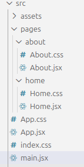
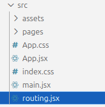

React Router basics
Two pages, one React app
You already have a React app running. Now give it a Home page at / and an About page at
/about, with links to move between them.
These are different views inside a single-page application. React Router matches the URL to a component and changes the content without loading a whole new HTML document during normal in-app navigation.
Start with a working Vite + React JavaScript project. If you need one, use Starting a React project. Keep its
index.css layout styles.
| URL path | Page component | Content |
|---|---|---|
/ |
Home |
Home content |
/about |
About |
About content |
Step 1
Install the dependency
Open the project folder in VS Code and its terminal. Check that the terminal is in the folder containing
package.json. If the development server is running, stop it with Ctrl +
C.
npm install react-routerThis adds the routing package to this project. You only need to install it once for this setup. If npm
reports an unsupported Node.js version, update to a supported LTS release before continuing. The examples
below import routing components from react-router.
Step 2
Wrap the app in BrowserRouter
Open src/main.jsx. Add the BrowserRouter import and wrap
<App /> with it. For the Vite project from the setup lesson, the complete file is:
import { StrictMode } from 'react'
import { createRoot } from 'react-dom/client'
import { BrowserRouter } from 'react-router'
import './index.css'
import App from './App.jsx'
createRoot(document.getElementById('root')).render(
<StrictMode>
<BrowserRouter>
<App />
</BrowserRouter>
</StrictMode>,
)BrowserRouter connects the components inside it to browser routing. Because App
is inside the wrapper, the pages and navigation it renders can use the router too.
Keep the existing imports, including index.css. Add the router once
here; you do not need a second BrowserRouter in App.jsx.
Step 3
Organise your page files
Inside src, create a pages folder. Add a folder for each page, keeping its JSX
and CSS files together:
src/
pages/
home/
Home.jsx
Home.css
about/
About.jsx
About.css

Leave Home.css and About.css empty for now, but create both files so the imports
work.
In this setup, folders organise your code; they do not create routes automatically. You will connect URL paths to page components explicitly.
Step 4
Create Home and About components
Put this component in src/pages/home/Home.jsx:
import './Home.css'
export default function Home() {
return (
<>
<h1>Home</h1>
<p>Home content</p>
</>
)
}The About page
Put this component in src/pages/about/About.jsx:
import './About.css'
export default function About() {
return (
<>
<h1>About</h1>
<p>About content</p>
</>
)
}Each file exports a component and imports its own CSS. The capitalised names Home and
About let you use them as JSX components.
Step 5
Map paths to components
Create src/routing.jsx beside App.jsx. Keeping the route list in its own file
makes it easy to find.


routing.jsx
import { Routes, Route } from 'react-router'
import Home from './pages/home/Home.jsx'
import About from './pages/about/About.jsx'
export default function Pages() {
return (
<Routes>
<Route index element={<Home />} />
<Route path="about" element={<About />} />
</Routes>
)
}Routes- Contains the route definitions and chooses the matching route for the current URL.
Route- Connects a path to the JSX in its
elementprop. index- The default route at this level. In this top-level example, it renders
Homeat/. path="about"- Matches
/aboutin this top-level route list and rendersAbout.
The imports load your page components. Use element={<Home />}, with JSX inside braces,
rather than a text name.
Step 6
Show the routes inside App
Defining Pages is not enough: App must render it. Replace
src/App.jsx with this complete example. <Pages /> replaces the fixed text
inside the main content area.
import { Link } from 'react-router'
import Pages from './routing.jsx'
import './App.css'
export default function App() {
return (
<>
<header>
<nav className="site-nav" aria-label="Main navigation">
<Link to="/">Home</Link>
<Link to="/about">About</Link>
</nav>
</header>
<main id="main-content">
<Pages />
</main>
<footer>some footer</footer>
</>
)
}Use Link for in-app navigation
Link uses to for the destination. Here to="/about" changes the URL
and shows the About component without a full document reload. These destinations are URL paths, not paths to
JSX files.
An ordinary <a href="/about"> can navigate too, but normally requests a new document.
Use Link or NavLink for pages within this React app. Normal anchors are still
appropriate for external websites and downloads.
The header and footer stay in App; the route determines which page appears inside
main.
Step 7
Show which page is active
Use NavLink when a navigation item should identify the current page. It adds an
active class when its destination matches.
Replace the Link version of src/App.jsx with this version:
className="nav-link" supplies your base styling class. The active link also gets
active, so CSS can target both together. The Home link uses end to express an
exact destination match.

Try it
Run and test both routes
Save your files, then restart the development server:
npm run dev- Open the Local address printed by Vite. At
/, you should see the Home heading and content. - Select About. The URL should end in
/about, and the content should change to About. - Select Home to return to
/. - Check that only the current navigation link is red and underlined.
- Use the browser’s Back and Forward buttons to move between the pages.
- Open
/aboutdirectly and refresh it while the development server is running.
When publishing later, a host using BrowserRouter needs to serve the
app’s index.html for route URLs such as /about. A deployed page that works via
links but fails on refresh often needs this host configuration.
Quick fixes
Check the connections
- The route content never appears
- Import
PagesintoApp.jsxand render<Pages />insidemain. Savingrouting.jsxalone does not display it. - A router-context error appears
- Wrap
Appin oneBrowserRouterinmain.jsx. Both navigation and routes must be inside it. - A page import cannot be found
- Match the folder path and filename case, such as
./pages/home/Home.jsx. Create the CSS files imported by the page components. - The link does not open the expected page
- Use
to="/about", nothrefor a filename. Check forpath="about"in the route list. - The active style is missing
- Use
NavLink, includeclassName="nav-link", and check thatApp.cssis imported. The selector is.nav-link.activewith no space.
For the underlying API, see the official React Router guides to installation, routing and navigation.